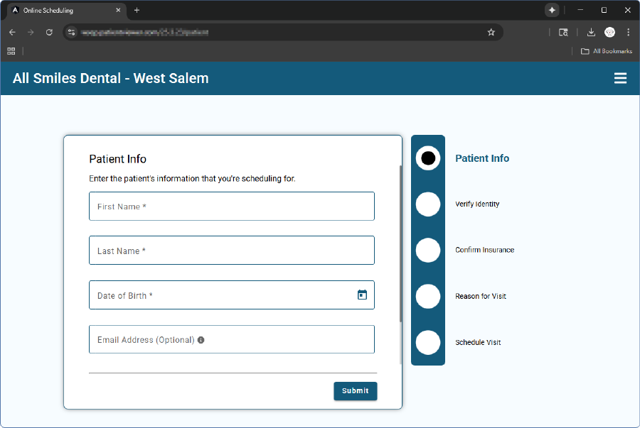

See Web Sched Feature.
Web Sched Existing Patient allows your patients to schedule their next appointment online. These appointments follow rules set by your practice (e.g., available operatories, available times, appointment types, etc.)
To access Web Sched Existing Patient, add a link to your website or share the link via text or email. Alternatively, Web Sched Existing Patient can be embedded on your website.
Optionally, patients can enter their insurance information when scheduling their appointment. This information displays as an appointment note for the office to later enter as an insurance plan.

Appointment Reasons are Appointment Types set up by the practice. If the patient is due for a recall appointment, Teeth Cleaning becomes an option as well.

The patient can select an available date, time, and provider to schedule their appointment. Appointment information is then confirmed by the patient and booked. Booked appointments immediately display in the Open Dental Appointments Module and an Alert is sent to the office.